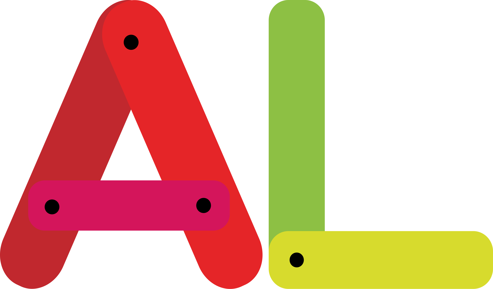
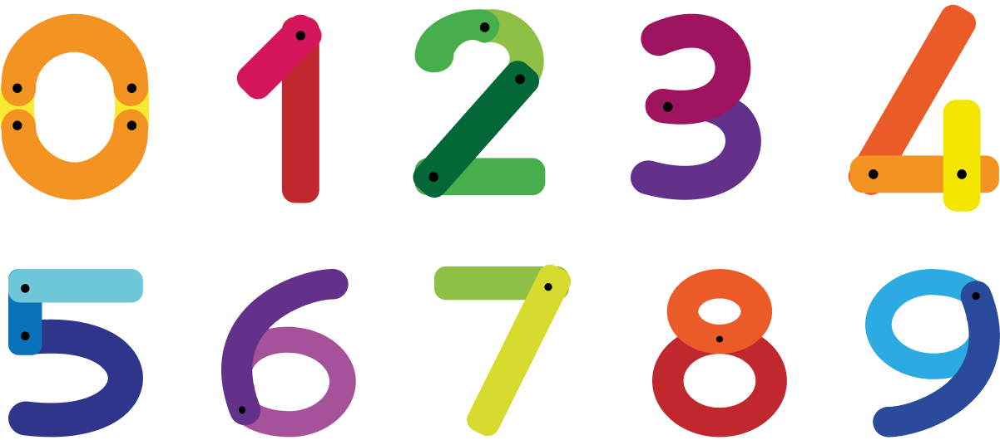
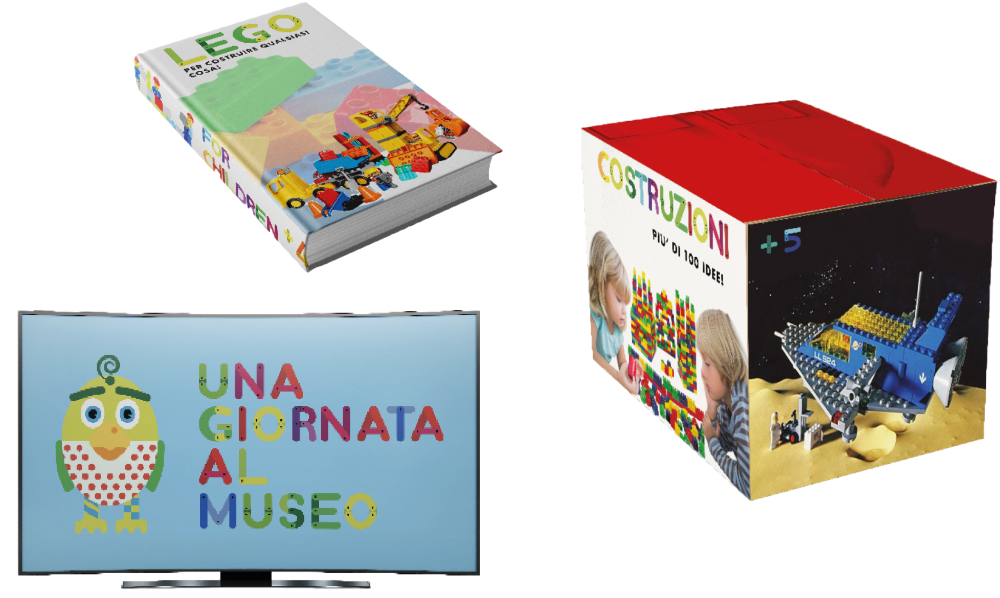

Nel mondo della tipografia, un nuovo protagonista emerge con una potenza raddoppiata. Il carattere tipografico doppio incarna una fusione ineguagliabile di gioco e divertimento, portando una ventata di freschezza e originalità nella scrittura e nel design.
Partendo dalla costruzione dell’Underground ho creato ed iniziato a sottolineare e studiare ogni singola lettera nella sua principale caratterizzazione, cercando l’alternativa più efficace e significativa. Successivamente ho realizzato a mano quello che ne sarebbe stato il risultato finale e definitivo. Ogni lettera dell’alfabeto rispetto al carattere di partenza l’ho arrotondata ed è formata da parti differenti, tali parti sono unite fra loro con un punto, come se fosse un chiodo che tiene uniti i mattoncini.
Il carattere JollyPop è poi stato realizzato e progettato in digitale, nella versione definitiva e completa. Per quanto riguarda il colore ogni lettera ha il suo e ogni parte che la forma ha una propria gradazione. Nei suoi vari usi, il font, può essere cambiato cromaticamente in maniera completamente libera a seconda dell’esigenza ed al tipo di utilizzo, basta che si mantengano i principi prestabiliti.
In fine all’alfabeto finale si può aggiungere quello numerico.
Il font creato esce chiaramente dalle regole tradizionali della tipografia, adatta alla stesura di testi ampi, non potrà essere utilizzato come un carattere a bastoni comune. É un font creativo e alternativo, rispecchia molto il mondo dei bambini, dell’animazione, dei cartoni animati; potrebbe essere facilmente applicabile a testi corti, per esempio per dei titoli editoriali, come una rivista (per bambini), o per dei titoli di apertura/chiusura di un cartone animato, per il nome delle “app” dello smartphone, per i titoli dei giochi in scatola. Il carattere se usato per testi lunghi diventerebbe già di difficile lettura, mentre se utilizzato come sopra descritto può risultare veramente interessante.
